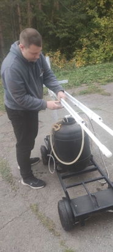
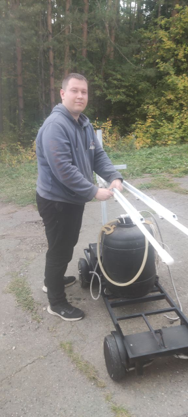
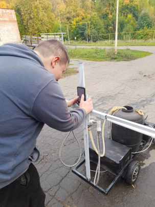
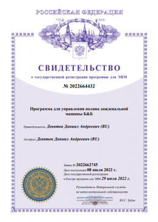
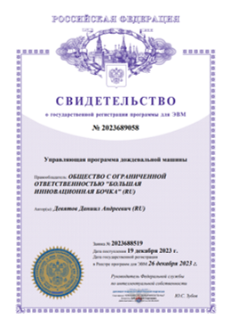
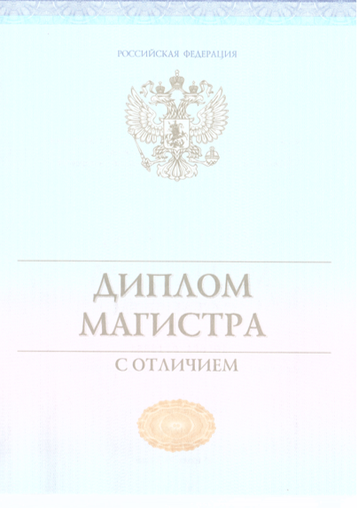
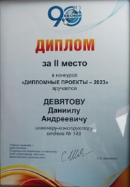
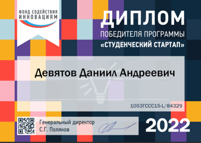

Увеличение урожайности:
Машина способна обеспечить оптимальные условия для роста и развития растений, что приводит к увеличению урожайности и повышению качества сельскохозяйственной продукции.
Полевое орошение:
Дождевальная машина предназначена для эффективного и равномерного орошения сельскохозяйственных полей, садов, огородов и других площадей, где необходимо поддерживать оптимальный уровень влажности для растений.
Контроль водного режима:
Дождевальная машина позволяет тщательно контролировать и регулировать подачу воды, основываясь на потребностях растений, климатических условиях, что помогает предотвращать переувлажнение или засуху.
Экономия ресурсов:
Благодаря своей точности и эффективности, дождевальная машина позволяет экономить воду и энергию, обеспечивая оптимальное использование ресурсов.
Мобильность и гибкость:
Дождевальных машин обладают мобильностью и гибкостью, позволяя их легко перемещать с места на место в зависимости от потребностей поля или сада.
Встроенный модуль движения позволяет оператору удаленно совершать управление машиной, а модуль анализа почв собирает информацию о состоянии пройденных площадей и выводит информацию оператору.


Конструкция дождевальной машины Б&Б состоит из единообразных модулей стыкующихся между собой и основаниями, за счет этого достигается максимальный обхват площади полей.
Внутренняя структура выдерживающая химически-активные среды, что позволяет использовать дождевальную машину не только для полива водой, но и для обработки полей минералами и витаминами.

Дождевальная машина состоит на 85% из отечественных узлов и агрегатов, что позволяет снизить затраты на импортные компоненты и обеспечить более доступные цены для потенциальных покупателей.
Прочный каркас обеспечивает стабильность и устойчивость дождевальной машины, что позволяет ей работать даже при сильных ветрах или приложении давления от водяных струй.







